%%{init: {'theme': 'base', 'themeVariables': {'background': '#FFFFFF', 'primaryColor': '#FFFFFF', 'primaryBorderColor': '#E5E5EA', 'primaryTextColor': '#1D1D1F', 'lineColor': '#86868B', 'secondaryColor': '#F5F5F7', 'tertiaryColor': '#FFFFFF', 'mainBkg': '#FFFFFF', 'nodeBorder': '#E5E5EA', 'clusterBkg': '#F5F5F7', 'clusterBorder': '#E5E5EA', 'titleColor': '#1D1D1F', 'edgeLabelBackground': '#FFFFFF'}}}%%
graph LR
A[MCT1: CPU Core] --> B[MCT3: System-on-Chip]
B --> C[Speicher]
B --> D[Bussysteme]
B --> E[Peripherie und I/O]
style B fill:#FFFFFF,stroke:#E2001A,stroke-width:2px !important
01 · Speicherphysik & RAM-Typen
Mikrocomputertechnik 3 · DHBW Stuttgart
Prof. Dr.-Ing. Daniel Klünder
Willkommen zu Mikrocomputertechnik 3!
- von der isolierten CPU zum Gesamtsystem
- System-on-Chip (SoC): CPU, Speicher, Busse und Peripherie im Zusammenspiel
- Hardware trifft Software: von nacktem Assembler zur hardwarenahen C-Programmierung
Rückblick: Was wir aus MCT1 wissen
- Die RISC-V ISA: eleganter, modularer Befehlssatz (RV32I)
- Die Register-Werkbank: 32 Architektur-Register als schneller, aber winziger Arbeitsbereich
- Der Datenpfad: Fetch, Decode, Execute, Memory und Write-Back
- Pipelining: mehrere Befehle gleichzeitig auf dem Fließband
- Memory-Mapped I/O: Geräte tarnen sich als Adressen im Arbeitsspeicher
Der Paradigmenwechsel: Core vs. SoC
- Der Core (CPU): reines Rechenwerk (ALU, Register, Pipeline)
- Früher: CPU, RAM und I/O als getrennte Bausteine auf der Platine
- Heute: System-on-Chip — alles auf einem Silizium-Die
- Vorteile: weniger Strom, Kosten und Platz; Herausforderung: Systembus
SoC: Komponenten am Systembus
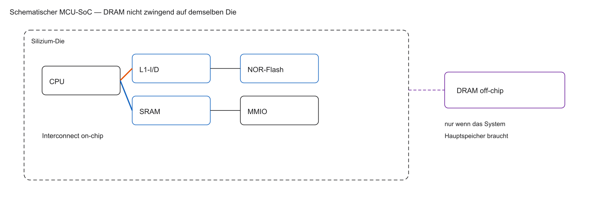
- Cache hängt am Kern, nicht „irgendwo am Bus“ wie ein UART
- NOR-Flash und SRAM können on-chip sein; großer DRAM meist eigener Chip
- Nicht jeder SoC trägt den gesamten Hauptspeicher auf demselben Die
Unsere Werkzeuge in MCT3
- Hochsprache statt Assembler: Programmierung in C (Embedded Systems)
- Toolchain: RISC-V GCC übersetzt C in Maschinencode
- Simulator: von Venus zu Renode
- Fokus: Hardware-Treiber statt Sortier-Algorithmen
- Bare-Metal: direkt auf der Hardware, ohne Betriebssystem
%%{init: {'theme': 'base', 'themeVariables': {'background': '#FFFFFF', 'primaryColor': '#FFFFFF', 'primaryBorderColor': '#E5E5EA', 'primaryTextColor': '#1D1D1F', 'lineColor': '#86868B', 'secondaryColor': '#F5F5F7', 'tertiaryColor': '#FFFFFF', 'mainBkg': '#FFFFFF', 'nodeBorder': '#E5E5EA', 'clusterBkg': '#F5F5F7', 'clusterBorder': '#E5E5EA', 'titleColor': '#1D1D1F', 'edgeLabelBackground': '#FFFFFF'}}}%%
flowchart LR
A[main.c] -->|RISC-V GCC| B[firmware.elf]
B -->|Laden| C[Renode]
C --> D[Virtueller SoC]
style C fill:#FFFFFF,stroke:#E2001A,stroke-width:2px !important
Was ist Renode?
- Industrie-Standard: u. a. bei Google, Intel und Microchip zur Chip-Simulation
- Vollständige SoC-Simulation: CPU, Busse, Timer und RAM
- Professionelles Kommandozeilen-Tool (ohne grafisches Breadboard)
- Funktionale Emulation von CPU, Bussen und Peripherie — kein Versprechen taktgenauer Chip-Nachbildung
- Virtuelle Zeit des Simulators ist nicht dasselbe wie ein HDL-Timing-Modell
- Skript-gesteuert: SoCs über Textdateien (
.resc/.repl)
Modul-Übersicht: Unser Fahrplan
- Block 1 & 2: Speicherphysik, RAM-Typen, Caches und die Memory Wall
- Block 3 & 4: Interrupts, Hardware-Timer, PWM und Watchdogs
- Block 5 & 6: Serielle Busse (UART, I2C, SPI) und DMA
- Block 7 & 8: Out-of-Order Execution und Edge-AI (KI-Beschleuniger)
- Block 9: Multicore und Abschluss-Labor
%%{init: {'theme': 'base', 'themeVariables': {'background': '#FFFFFF', 'primaryColor': '#FFFFFF', 'primaryBorderColor': '#E5E5EA', 'primaryTextColor': '#1D1D1F', 'lineColor': '#86868B', 'secondaryColor': '#F5F5F7', 'tertiaryColor': '#FFFFFF', 'mainBkg': '#FFFFFF', 'nodeBorder': '#E5E5EA', 'clusterBkg': '#F5F5F7', 'clusterBorder': '#E5E5EA', 'titleColor': '#1D1D1F', 'edgeLabelBackground': '#FFFFFF'}}}%%
flowchart TD
A[Speicher und Caches] --> B[Timer und Peripherie]
B --> C[Busse und DMA]
C --> D[OoO und Edge-AI]
D --> E[Multicore und Abschluss]
style A fill:#FFFFFF,stroke:#E2001A,stroke-width:2px !important
Prüfungsleistung und Laborbetrieb
- Theorie und Praxis: je Einheit 2 Stunden Theorie und 2 Stunden Labor
- Labor als Schlüssel: C-Treiber für das Verständnis der SoC-Architektur
- Prüfungsform: schriftliche Klausur am Semesterende (ca. 90 Minuten)
- Klausurinhalte: C-Code, Pointer-Arithmetik, Architektur, Cache-Berechnungen
- Fokus auf Problemlösung, nicht auf Auswendiglernen von Datenblättern
Agenda für den heutigen Tag
- Systemarchitektur (Von-Neumann vs. Harvard) und Memory Wall
- Speicher-Klassifikationen (volatil, non-volatil, Random Access)
- Festwertspeicher (ROM, EPROM, Flash) — Architektur und Nutzung
- Volatiler Speicher (SRAM vs. DRAM) — Transistoren vs. Kondensatoren
- Spezialspeicher im SoC (DPRAM, FIFOs) und Brückenschlag zum Labor
Lernziele Block 1
- Memory Wall und Speicherhierarchie-Idee motivieren
- Volatil vs. non-volatil sowie Random Access vs. sequentiell einordnen
- NOR-Flash/XIP vs. NAND und Wear Leveling erklären
- SRAM (6T) vs. DRAM (1T1C, Refresh) unterscheiden
- Memory Map und Linker-Sections (
.text,.data,.bss) zuordnen
Die Leitfrage des Tages
- Die CPU ist schnell: Milliarden Berechnungen pro Sekunde
- Datenhunger: jede Berechnung braucht Befehle und Daten
- Masse: moderne Programme bestehen aus Milliarden von Bits
- Flip-Flop-Problem: Milliarden D-Flip-Flops sind zu groß, teuer und stromhungrig
- Leitfrage: Wie speichert Silizium Milliarden Bits dicht und effizient?
%%{init: {'theme': 'base', 'themeVariables': {'background': '#FFFFFF', 'primaryColor': '#FFFFFF', 'primaryBorderColor': '#E5E5EA', 'primaryTextColor': '#1D1D1F', 'lineColor': '#86868B', 'secondaryColor': '#F5F5F7', 'tertiaryColor': '#FFFFFF', 'mainBkg': '#FFFFFF', 'nodeBorder': '#E5E5EA', 'clusterBkg': '#F5F5F7', 'clusterBorder': '#E5E5EA', 'titleColor': '#1D1D1F', 'edgeLabelBackground': '#FFFFFF'}}}%%
flowchart TD
A[1 Bit speichern] --> B[D-Flip-Flop: 20+ Transistoren]
B --> C[1 Gigabyte = 8 Mrd. Bits]
C --> D[160 Mrd. Transistoren?]
D --> E[Lösung: neue Speicherkonzepte]
style E fill:#FFFFFF,stroke:#E2001A,stroke-width:2px !important
Systemarchitektur: Von-Neumann
- Klassisches Modell nach John von Neumann (1945)
- Gemeinsamer Speicher: Befehle und Daten im selben Arbeitsspeicher
- Gemeinsamer Bus für Adressen und Daten zwischen CPU und RAM
- Von-Neumann-Flaschenhals: kein paralleles Laden von Befehl und Variable
- Folge: Structural Hazards auf dem Fließband
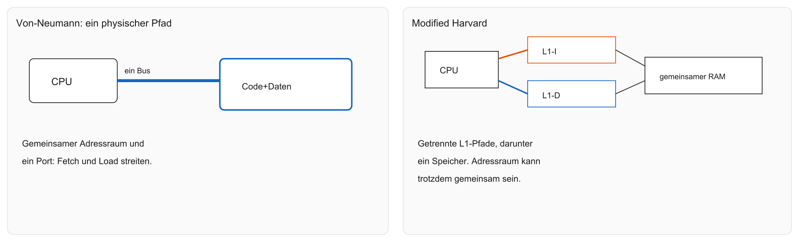
- Gemeinsamer Adressraum heißt nicht automatisch ein gemeinsamer physischer Port
- Am einfachen Ein-Port-Modell kollidieren Fetch und Load
Systemarchitektur: Harvard
- Harvard-Architektur trennt die Speicherräume strikt
- Getrennte Speicher für Befehle (Code) und Daten
- Getrennte Bus-Systeme zur CPU
- Vorteil: Fetch und Memory im selben Taktzyklus möglich
- Modified Harvard: extern Von-Neumann, intern getrennte L1-Caches
- Striktes Harvard: getrennte Speicher und getrennte Busse
- Modified Harvard: getrennte L1-Caches, gemeinsamer Speicher darunter
- Der Adressraum kann trotzdem ein linearer 32-Bit-Raum bleiben
Die Memory Wall
- Moores Gesetz: Transistoren kleiner, CPUs schneller
- Ungleichgewicht: RAM-Geschwindigkeit hielt nicht mit
- Kenngröße hier: Durchsatz (Arbeit pro Zeit), nicht Latenz mit Bandbreite vermischt
- Voll abhängig, ohne Überlappung: \(4\,\mathrm{GHz}\times 100\,\mathrm{ns} = 400\) Takte
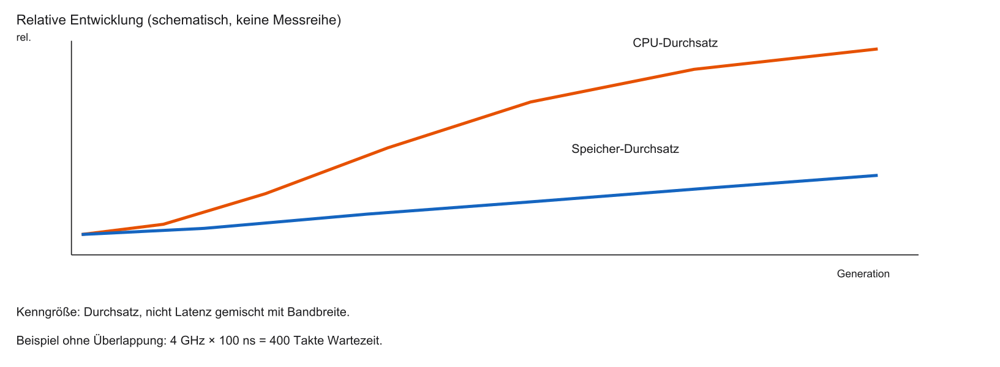
Das magische Speicher-Dreieck
Drei Ziele, die sich gegenseitig ausschließen:
- Geschwindigkeit — wie schnell lesen/schreiben?
- Kapazität — wie viele Gigabyte auf dem Chip?
- Kosten — wie teuer ist ein Bit in der Herstellung?
Eiserne Regel als Modell: Geschwindigkeit, Kapazität und geringe Kosten lassen sich nicht alle drei gleichzeitig maximieren. Beispiel: schnell und groß ist extrem teuer (SRAM); groß und billig ist langsam (Massenspeicher).
%%{init: {'theme': 'base', 'themeVariables': {'background': '#FFFFFF', 'primaryColor': '#FFFFFF', 'primaryBorderColor': '#E5E5EA', 'primaryTextColor': '#1D1D1F', 'lineColor': '#86868B', 'secondaryColor': '#F5F5F7', 'tertiaryColor': '#FFFFFF', 'mainBkg': '#FFFFFF', 'nodeBorder': '#E5E5EA', 'clusterBkg': '#F5F5F7', 'clusterBorder': '#E5E5EA', 'titleColor': '#1D1D1F', 'edgeLabelBackground': '#FFFFFF'}}}%%
flowchart TD
A[Geschwindigkeit] --- B[Kapazität]
B --- C[Geringe Kosten]
C --- A
style A fill:#FFFFFF,stroke:#E2001A,stroke-width:2px !important
Klassifikation 1: Volatil vs. Non-Volatil
Volatiler Speicher (flüchtig)
- Verliert Daten sofort ohne Betriebsspannung
- Beispiele: SRAM, DRAM, CPU-Register
- Vorteil: meist schnell und beliebig oft beschreibbar
Non-volatiler Speicher (nicht-flüchtig)
- Behält Daten Jahre ohne Strom
- Beispiele: Flash, SD-Karten, ROM
- Nachteil: oft langsamer beim Schreiben, physischer Verschleiß
Klassifikation 2: Random Access vs. sequenziell
Random Access (wahlfreier Zugriff)
- Jede Adresse ist direkt ansprechbar — die Latenz muss deshalb nicht für jede Anfrage gleich sein
- Beispiel RAM: kein Spulen wie bei einem Band; Caches und DRAM-Zeilen ändern die konkrete Wartezeit trotzdem
Sequenzieller Zugriff
- Daten nur der Reihe nach (wie eine Kassette)
- Ende erreicht man erst nach dem Durchlaufen der davorliegenden Daten
Architektur-Bedeutung: CPUs führen Code nur aus Random-Access-Speichern direkt aus.
Die Speicherhierarchie-Pyramide
Um die Memory Wall zu überwinden, stapeln Architekten Speicher übereinander:
- Spitze: CPU-Register (klein, teuer, blitzschnell)
- Ebene 2: Caches L1/L2/L3 (SRAM — Megabytes, sehr schnell)
- Ebene 3: Main Memory (DRAM — Gigabytes, moderat)
- Basis: Massenspeicher (Flash/SSD — Terabytes, langsam, billig, non-volatil)
Prinzip: häufig genutzte Daten liegen weiter oben.
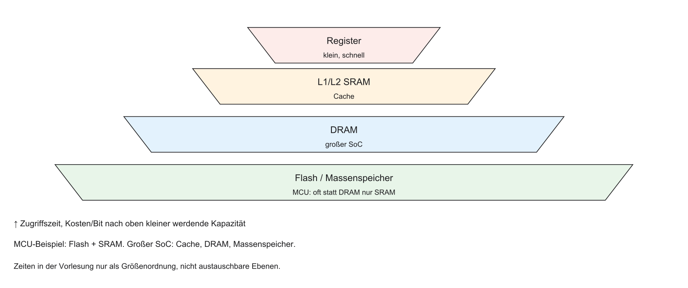
Fokus heute: Wir öffnen die Chips
- Heute: Physik statt Betriebssystem
- Wir öffnen die Boxen der Speicherhierarchie
- Wie funktioniert Festwertspeicher (ROM/Flash)?
- Warum nutzen SRAM und DRAM andere physikalische Konzepte?
- Was bedeutet das für uns als C-Programmierer am SoC?
Festwertspeicher (Non-Volatile)
- Start unten in der Pyramide: Speicher, der Stromausfall überlebt
- Überbegriff: ROM (Read-Only Memory)
- Historisch wirklich nur lesbar
- Evolution: Firmware nachträglich updatebar machen
- Weg: Mask-ROM, PROM, EPROM, EEPROM, Flash
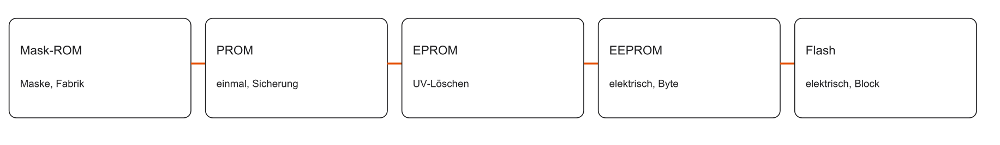
Mask-ROM
- Nullen und Einsen bei der Herstellung physisch verdrahtet (Fotolithografie-Masken)
- Vorteil: extrem billig in der Massenproduktion
- Nachteil: Bug \(\Rightarrow\) alle Chips unbrauchbar
- Früher: Game-Cartridges, Spieluhren
- Heute: kaum noch für Anwendercode; ggf. unveränderliche Boot-Loader
PROM (Programmable ROM)
- Chip verlässt das Werk leer (alles Einsen) und wird beim Kunden beschrieben
- Jede Zelle besitzt eine mikroskopische Sicherung (Fuse)
- Hohe Spannung „brennt“ die Sicherung durch: \(1 \rightarrow 0\)
- OTP (One-Time Programmable): einmal durchgebrannt, nie reparierbar
- Gut für kleine Serien; Firmware-Updates weiterhin unmöglich
EPROM (Erasable PROM)
- Speicher, der gelöscht und neu beschrieben werden kann
- Quarzglas-Fenster auf der Chip-Oberseite
- UV-Licht (ca. 20–30 Minuten) löscht den gesamten Chip
- Nachteil: immer ganzer Chip, langsam, Ausbau nötig
- Fenster nach dem Brennen abdecken, sonst löscht Sonnenlicht den Code
EEPROM (Electrically Erasable PROM)
- Löschen per elektrischem Signal statt UV-Licht
- In-System Programming: kein Auslöten nötig
- Byte-Ebene: einzelne Bytes gezielt löschen und neu beschreiben
- Kehrseite: große Zellen, geringe Dichte, hohe Kosten pro Megabyte
- Heute: kleine Konfigurationsdaten (MAC-Adresse, Kalibrierung)
Flash-Speicher: Die Revolution der Blöcke
- Geburt des Flash (Toshiba, 1984): Kompromiss aus EPROM und EEPROM
- Löschen nicht byteweise, sondern blockweise „blitzartig“
- Architektur-Trick: Wegfall der byteweisen Löschlogik \(\Rightarrow\) kleinere Zellen
- Resultat: hohe Speicherdichte zu niedrigen Preisen
- Dominante Technologie für Firmware und Massenspeicher (SSD, USB, Smartphones)
Das Floating-Gate (logische Sicht)
- Flash speichert Bits ohne Strom über Floating-Gate-Transistoren
- Zwei Gates: Control-Gate und isoliertes Floating-Gate
- Floating-Gate vollständig in Siliziumdioxid eingeschlossen
- Hohe Spannung kann Elektronen auf das Floating Gate bringen
- Die CPU sieht keine Elektronen, sondern eine verschobene Schwellspannung
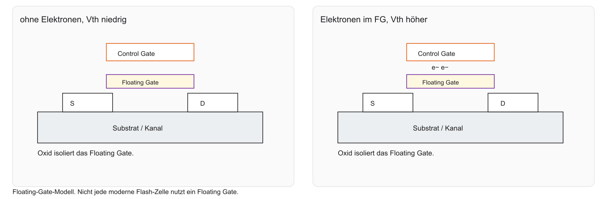
NAND vs. NOR Flash
Flash spaltet sich in zwei Architekturen — je nach Verdrahtung der Floating-Gate-Zellen:
| NOR | NAND | |
|---|---|---|
| Verdrahtung | parallel | seriell (Kette) |
| Zugriff | Byte/Wort (Random Access) | Seiten (Pages) |
| Typischer Einsatz | Mikrocontroller, XIP | SSD, Smartphones |
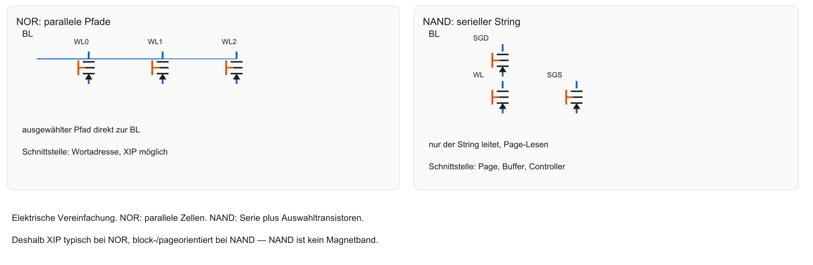
NOR-Flash & Execute-In-Place (XIP)
- XIP: Fetch holt Befehle direkt aus dem NOR-Flash (ohne vorherige RAM-Kopie des Codes)
- Fetch-Stage der RISC-V-Pipeline liest Code aus dem Flash
- Nachteil: geringere Dichte als NAND; Lesezugriff hat Waitstates, ist kein SRAM
- XIP heißt: der Fetch holt den Befehl aus dem NOR, nicht dass jede Adresse dieselbe Latenz hat
C-Code und der Flash-Speicher
consterzwingt in C keine Flash-Platzierung- Bei der hier betrachteten Embedded-Toolchain liegen statische Konstanten typischerweise in
.rodata - Welche Region
.rodatatrifft, entscheidet Linker-Skript und Startup, nicht das Schlüsselwort allein - Ein normaler Store in eine nicht beschreibbare Region und ein konkreter RISC-V-Trap (
mcause) sind zwei Ebenen - Ohne Plattformmodell (kein
.replim Repo) wird hier kein bestimmtermcause-Wert behauptet
NAND-Flash (Massenspeicher)
- Höchste Dichte durch serielle Verkettung der Zellen
- Page-orientiert: der Controller liefert eine Seite in einen Buffer, keine einzelne CPU-Adresse wie NOR
- Kein XIP: Code wird nach RAM kopiert
- Nicht rein sequenziell wie ein Magnetband — innerhalb der Page wählt der Controller
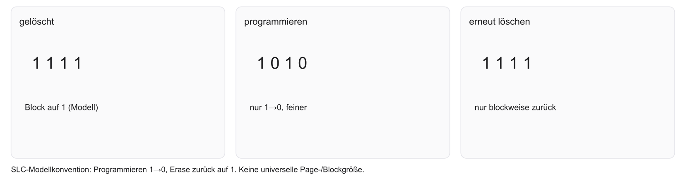
Die Flash-Krankheit: Wear and Tear
- Geheimnis: Flash verschleißt bei jedem Schreibvorgang
- Hohe Spannung beim Tunneln beschädigt die Oxid-Isolation
- Viele Schreib-/Löschzyklen ermüden das Oxid — die Zahl hängt vom Zelltyp ab, sie ist nicht unendlich und nicht für alle Technologien gleich
Die Rettung: Wear Leveling (FTL)
- Wear Leveling: Verschleißausgleich über wechselnde physische Blöcke
- Logischer Sektor → jedes Mal anderer physischer Flash-Block
- Flash Translation Layer (FTL) übersetzt logisch \(\leftrightarrow\) physisch
- SD/SSD: FTL im Controller. Bare-Metal: Software muss das selbst leisten
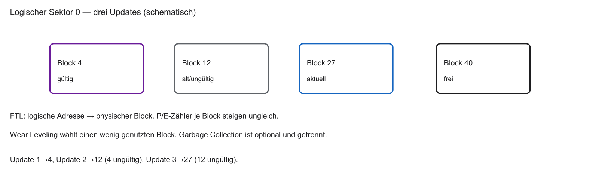
Memory Map: Wo liegt der Flash im SoC?
- In der 32-Bit Memory Map ist ein Block für Flash reserviert
- Beispieladressen stehen im Datenblatt der jeweiligen Plattform
- Im Repo gibt es kein
.replund kein Linker-Skript — die spätere Map ist ausdrücklich schematisch - Boot per XIP nur, wenn der Fetch-Pfad den NOR-Flash wortweise lesen kann
Zusammenfassung: Non-Volatile Memory
- Festwertspeicher überlebt Stromausfall und hält Firmware/Boot-Code
- Evolution: Mask-ROM bis blockbasiertes Flash
- NOR-Flash: parallel, XIP, Standard in Mikrocontrollern
- NAND-Flash: seriell, dicht, Massenspeicher; braucht RAM zum Ausführen
- Flash verschleißt (Oxid-Schäden) und braucht Wear Leveling
Der Bedarf an Arbeitsspeicher
Wir brauchen Speicher, der:
- im Bereich der Pipeline nutzbar liest und schreibt
- sehr oft beschreibbar ist, ohne Flash-artigen Verschleiß
Antwort: volatiler Speicher (RAM).
Zwei Technologien: SRAM und DRAM.
Fragen? — Non-Volatile
- Flash-Architektur?
- Execute-in-Place (XIP)?
- Wear Leveling?
Kurze Pause
10 Minuten Pause.
Danach:
- SRAM (6-Transistor-Zelle)
- DRAM (1-Transistor-Zelle und Refresh)
- Spezialspeicher (FIFOs und Dual-Ported RAM)
Volatiler Speicher: RAM
- Arbeitsspeicher: Kurzzeitgedächtnis des Prozessors
- Volatil: Daten weg ohne Versorgungsspannung
- Wahlfreier Zugriff: jede Adresse gleich schnell
- Zwei Architekturen: SRAM (Static RAM) und DRAM (Dynamic RAM)
- Gleicher Zweck, grundlegend andere Physik
RAM: SRAM und DRAM
%%{init: {'theme': 'base', 'themeVariables': {'background': '#FFFFFF', 'primaryColor': '#FFFFFF', 'primaryBorderColor': '#E5E5EA', 'primaryTextColor': '#1D1D1F', 'lineColor': '#86868B', 'secondaryColor': '#F5F5F7', 'tertiaryColor': '#FFFFFF', 'mainBkg': '#FFFFFF', 'nodeBorder': '#E5E5EA', 'clusterBkg': '#F5F5F7', 'clusterBorder': '#E5E5EA', 'titleColor': '#1D1D1F', 'edgeLabelBackground': '#FFFFFF'}}}%%
flowchart LR
A[RAM] --> B[SRAM]
A --> C[DRAM]
B --> D[Sehr schnell, teuer, CPU-nah]
C --> E[Langsamer, billig, Hauptspeicher]
style A fill:#FFFFFF,stroke:#E2001A,stroke-width:2px !important
SRAM — Prinzip
- Statisch: Wert bleibt ohne Auffrischen, solange Strom anliegt
- Kein Refresh nötig (im Gegensatz zu DRAM)
- Schnellste verfügbare Speichertechnologie
- Latenz oft unter \(1\,\mathrm{ns}\)
- Kehrseite: geringe Dichte — viele Transistoren pro Zelle
Refresher: Das D-Flip-Flop (MCT1)
- Register in MCT1: D-Flip-Flops
- Master-Slave-D-FF: oft über 20 Transistoren
- 1 MB mit Flip-Flops: Hunderte Millionen Transistoren
- Zu viel Fläche und Abwärme
- Lösung: Design auf das physikalische Minimum eindampfen
D-Flip-Flop: Master und Slave
%%{init: {'theme': 'base', 'themeVariables': {'background': '#FFFFFF', 'primaryColor': '#FFFFFF', 'primaryBorderColor': '#E5E5EA', 'primaryTextColor': '#1D1D1F', 'lineColor': '#86868B', 'secondaryColor': '#F5F5F7', 'tertiaryColor': '#FFFFFF', 'mainBkg': '#FFFFFF', 'nodeBorder': '#E5E5EA', 'clusterBkg': '#F5F5F7', 'clusterBorder': '#E5E5EA', 'titleColor': '#1D1D1F', 'edgeLabelBackground': '#FFFFFF'}}}%%
flowchart TD
D[Daten D] --> M[Master-Latch]
CLK[Clock] --> M
CLK --> S[Slave-Latch]
M --> S
S --> Q[Ausgang Q]
style M fill:#FFFFFF,stroke:#E2001A,stroke-width:2px !important
style S fill:#FFFFFF,stroke:#E2001A,stroke-width:2px !important
Die 6T-SRAM-Zelle
- Klassisches SRAM-Bit: exakt 6 Transistoren (6T)
- Vier Transistoren: zwei kreuzgekoppelte Inverter
- Zwei Access-Transistoren als „Türsteher“
- Wordline (WL): öffnet die Zelle
- Bitlines (BL / \(\overline{\mathrm{BL}}\)): Daten hinein und heraus
6T-Zelle: Überblick
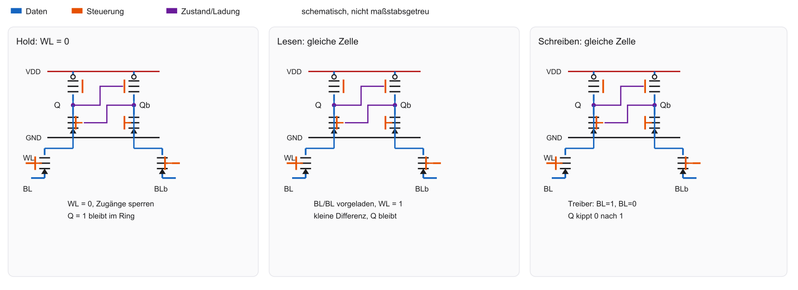
Der kreuzgekoppelte Inverter-Ring
- Bit speichern ohne Taktsignal
- Inverter: \(1 \rightarrow 0\), \(0 \rightarrow 1\)
- Ausgang von Inverter 1 \(\rightarrow\) Eingang von Inverter 2 und zurück
- Stabiler Ring: Zustand hält sich selbst
- Bistabilität: Gleichgewicht, solange Strom anliegt
Zustand halten (Hold State)
- Wordline \(= 0\,\mathrm{V}\): Hold State
- Access-Transistoren sperren
- Zelle von den Bitlines isoliert
- Strom nur im Inverter-Ring
- Ruhestrom theoretisch sehr gering
Hold State — Schema
Linkes Panel der 6T-Abbildung: WL = 0, Access-Transistoren sperren, der Ring bleibt geschlossen.
SRAM Lesen
- Die Zelle zieht eine Leitung nur leicht; sie wird im vorgesehenen Lesen nicht umgeschrieben
SRAM Schreiben
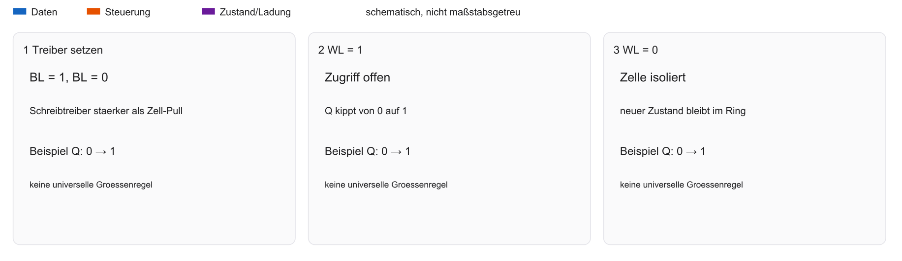
- Die Schreibtreiber müssen die Rückkopplung überwinden; eine feste Transistor-Größenregel gilt nicht für jede Bibliothek
Vorteile von SRAM
- Sehr kurze Zugriffszeit auf Makro-Ebene — nicht mit einem kompletten DRAM-Burst vergleichen
- Kein Refresh der Zelle
- Einfache Schnittstelle: Adresse anlegen, Daten abholen
- Geringer Stromverbrauch bei Inaktivität
- Integration im selben Logic-Prozess wie die ALU
Nachteile von SRAM
- Geringe Datendichte: 6 Transistoren pro Bit brauchen Fläche
- Hohe Kosten: Chipfläche ist teuer
- Kapazitäts-Limit: selten mehr als einige Dutzend MB SRAM als Cache
- Ungeeignet für Massenspeicher (Laptop mit 16 GB SRAM wäre unrealistisch)
Die Leckströme (Leakage)
- Moderne Nodes (z. B. 3 nm): Transistoren sperren nicht mehr perfekt
- Static Leakage auch im Hold State (Quantentunneling)
- Folge: Strom und Wärme nur zum Datenhalten
- Mobile SoCs: Power Gating ganzer SRAM-Blöcke im Standby
Einsatzgebiet von SRAM im SoC
- Registerfiles können aus Flip-Flops, Latches oder speziellen SRAM-Strukturen bestehen
- Ein RISC-V-Register ist nicht pauschal eine Standard-6T-Zelle
- L1/L2 sind häufig SRAM-Makros; die Latenz eines Cache-Hits ist nicht die Zellzeit allein
SRAM in der Hierarchie
%%{init: {'theme': 'base', 'themeVariables': {'background': '#FFFFFF', 'primaryColor': '#FFFFFF', 'primaryBorderColor': '#E5E5EA', 'primaryTextColor': '#1D1D1F', 'lineColor': '#86868B', 'secondaryColor': '#F5F5F7', 'tertiaryColor': '#FFFFFF', 'mainBkg': '#FFFFFF', 'nodeBorder': '#E5E5EA', 'clusterBkg': '#F5F5F7', 'clusterBorder': '#E5E5EA', 'titleColor': '#1D1D1F', 'edgeLabelBackground': '#FFFFFF'}}}%%
flowchart LR
CPU[CPU] --> L1[L1 Cache SRAM]
L1 --> L2[L2 Cache SRAM]
L2 --> L3[L3 Cache SRAM]
L3 --> RAM[Main Memory DRAM]
style L1 fill:#FFFFFF,stroke:#E2001A,stroke-width:2px !important
Schematischer Floorplan
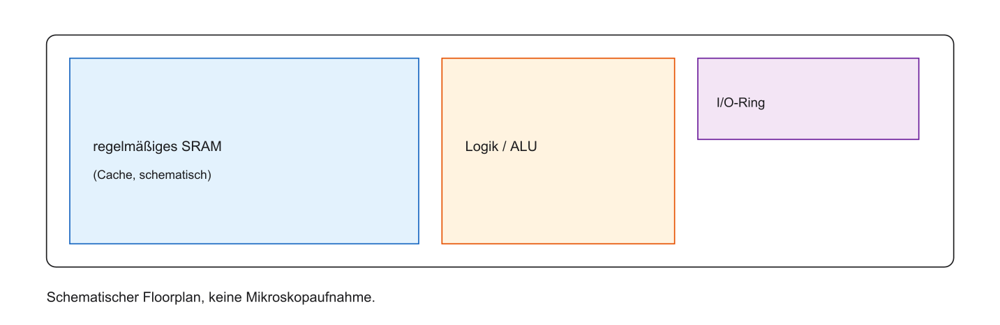
Zusammenfassung SRAM
- Typ: volatiler Arbeitsspeicher
- Zelle: 6T (Inverter-Ring)
- Vorteile: kein Refresh, sehr schnell
- Nachteile: flächenintensiv, Leckströme bei kleinen Nodes
- Einsatz: Caches und CPU-naher Speicher im SoC
Fragen? — SRAM
- Aufbau der 6T-Zelle?
- Schreib- oder Lesevorgang?
- Warum kein Refresh bei SRAM?
Volatiler Speicher: DRAM
- Ziel: Gigabyte Arbeitsspeicher zu akzeptablen Kosten
- Weg: Bauteile pro Bit radikal reduzieren
- Ergebnis: Dynamic RAM (DRAM)
- Dynamisch: Zelle hält den Zustand nicht allein — Ladung geht in Millisekunden verloren
- Zelle einfach, Controller komplex
Die 1T1C-Zelle
- Flip-Flop: \(\approx 20\) Transistoren; SRAM: 6; DRAM: 1 Transistor + 1 Kondensator
- Kondensator: speichert Ladung („Eimer“)
- Transistor: Schalter zum Füllen/Leeren
- Weniger Bauteile pro Bit sind kaum möglich
1T1C — Schema
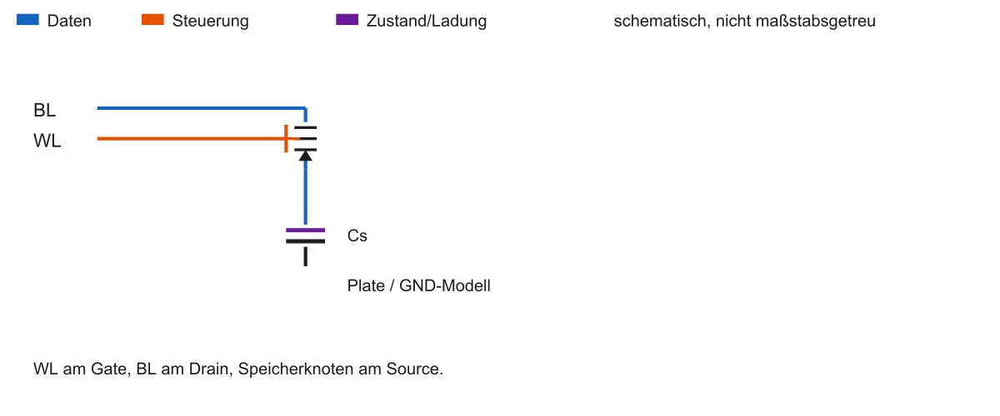
Kondensator als Speicher
- Geladen (hohe Spannung) \(\rightarrow\) logische 1
- Entladen (\(\approx 0\,\mathrm{V}\)) \(\rightarrow\) logische 0
- Kapazitäten im Femtofarad-Bereich — einige zehntausend bis hunderttausend Elektronen
- 3D-Fertigung: Trench-/Stack-Kondensatoren für Dichte
Was bedeutet „dynamisch“?
- Die Spannung einer gespeicherten 1 sinkt durch Leckstrom
- Das Refresh-Fenster ist geräte- und temperaturabhängig; 64 ms ist nur ein bekanntes Beispiel, keine Lebensdauer jedes Bits
Der Refresh-Zyklus
- Refresh läuft über Zeilen und Bänke, nicht als ein Schlag für den gesamten Speicher
- Ob und wie lange Zugriffe dabei warten, ist geräteabhängig
Refresh — Schema
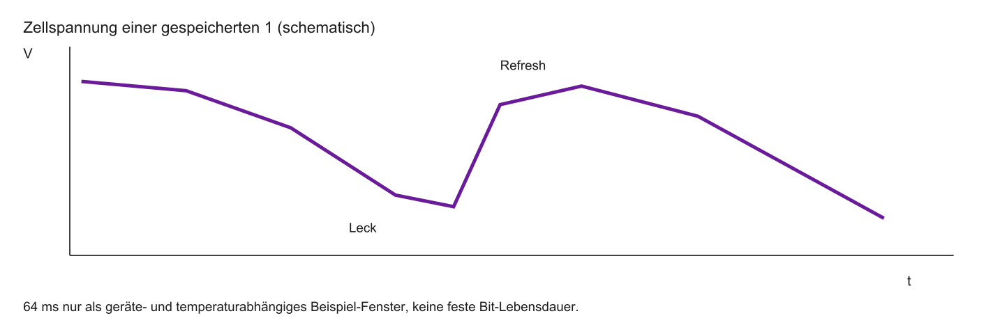
DRAM-Lesen ist destruktiv
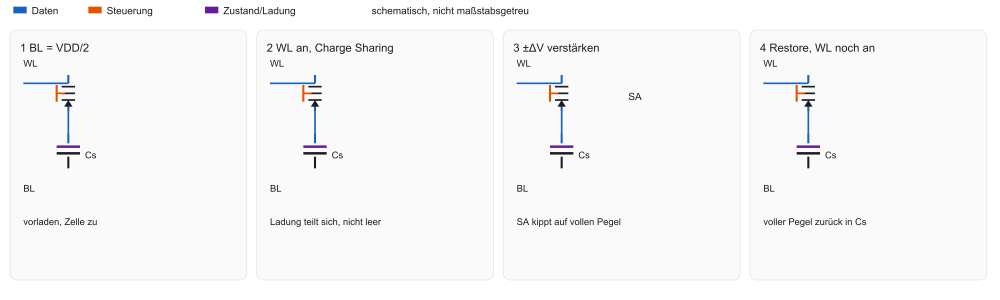
- Charge Sharing verschiebt BL und Zelle auf einen gemeinsamen Zwischenpegel
- Der Sense Amplifier treibt danach den vollen Pegel zurück in die Zelle
Sense Amplifiers
- Panels 3 und 4 der Lese-Abbildung: kleine Abweichung \(\pm\Delta V\) wird zum vollen Pegel
- Derselbe volle Pegel schreibt die Zelle zurück (Restore)
- Refresh einer Zeile nutzt denselben Mechanismus
DRAM Schreiben
- Bitline hart auf High oder Low treiben
- Wordline öffnet den Access-Transistor
- Kondensator füllt/entleert sich schnell
- Wordline zu — Bit gefangen (bis zum nächsten Refresh)
Adress-Matrix und Multiplexing
- Zellen in Zeilen und Spalten, oft mehrere Bänke
- Die Adresse zerfällt in Bank, Row, Column und Byte-Offset — die Breiten sind nicht zwei gleiche Hälften
Multiplexing — Schema
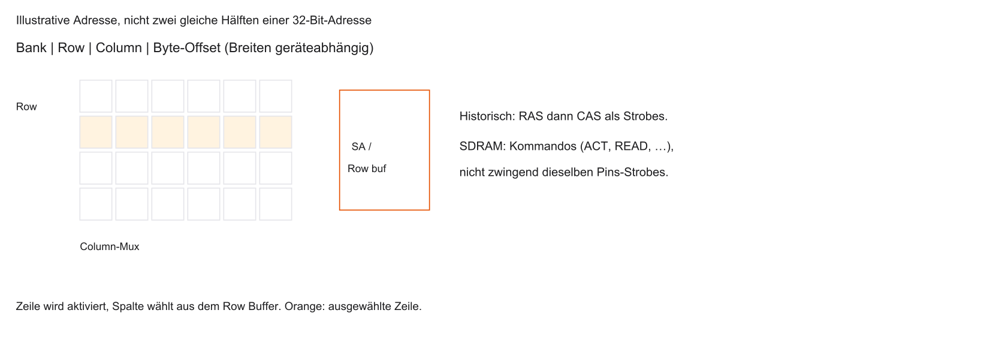
RAS und CAS
- Historisch: RAS und CAS als Strobes für Zeile und Spalte
- Moderne SDRAM-Schnittstellen nutzen Kommandos (Activate, Read, Precharge), nicht zwingend dieselben Strobes
- Die Abbildung der vorigen Folie trennt Matrix und diese Schnittstellen-Ebene
Warum DRAM langsamer ist als SRAM
- Adress-Multiplexing (Row, dann Column)
- Analoges Auslesen und Sense Amplifier
- Destruktives Lesen inkl. Zurückschreiben / Precharge
- Mögliche Wartezeiten während Refresh
SDRAM und DDR
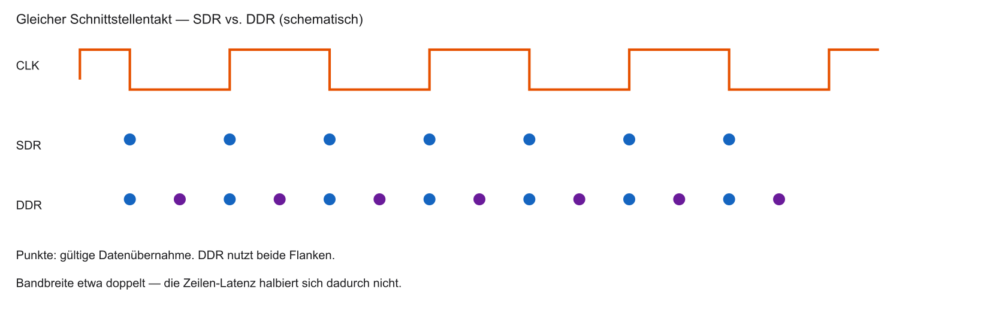
- LPDDR ist eine energiesparende Familie derselben Zellidee
Einsatzgebiet von DRAM im SoC
- Meist nicht auf dem Logic-Die (anderer Prozess)
- Separater Chip oder Package-on-Package
- Main Memory: OS, Heap (
malloc), große Arrays - Kleine MCUs: oft nur interner SRAM, kein DRAM
Vergleich: SRAM vs. DRAM
| SRAM | DRAM | |
|---|---|---|
| Zelle | 6T Inverter-Ring | 1T1C |
| Datenerhalt | stabil (mit Strom) | Refresh nötig |
| Geschwindigkeit | kurz auf SRAM-Makro-Ebene | länger für einen vollen DRAM-Zugriff |
| Dichte | gering | sehr hoch |
| Einsatz | Caches; Register je nach Implementierung | Hauptspeicher |
| Kosten / Bit | hoch | niedrig |
Spickzettel SRAM / DRAM
| Eigenschaft | SRAM | DRAM |
|---|---|---|
| Zellen-Architektur | 6 Transistoren | 1T + 1C |
| Datenerhalt | stabil (Strom an) | flüchtig (Refresh) |
| Geschwindigkeit | Zell-/Makro-Ebene, nicht Cache-Hit | voller Zugriff inkl. Zeile/Spalte |
| Speicherdichte | gering | extrem hoch |
| Einsatz im SoC | häufig Caches | Main Memory, oft off-chip |
| Kosten pro Bit | hoch | niedrig |
Angaben schematisch — typische Größenordnungen.
Fragen? — DRAM
- Kondensator-Prinzip?
- Destruktives Lesen?
- Refresh-Zyklus klar?
Spezialspeicher im SoC
- Neben Cache und Main Memory: spezialisierte RAM-Zellen
- Problem: CPU und Peripherie mit unterschiedlichen Takten
- Wie Daten austauschen ohne gegenseitiges Blockieren?
- Lösungen: Dual-Ported RAM (DPRAM) und FIFOs
Dual-Ported RAM (DPRAM)
- Zwei Ports mit eigener Adresse, eigenen Daten und eigener Steuerung
- Gleichzeitig an verschiedenen Adressen möglich
- Die Transistorzahl hängt von der konkreten Zelltopologie ab; „8T“ ist keine allgemeine Definition
DPRAM — Schema
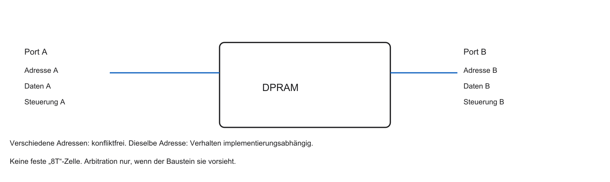
Kollisionsvermeidung im DPRAM
- Verschiedene Adressen: beide Ports arbeiten
- Dieselbe Adresse: Ergebnis und Arbitration sind implementierungsabhängig
- Ein Busy-Flag oder Stall ist eine mögliche, keine universelle Lösung
FIFO-Puffer
- First-In-First-Out: Warteschlange
- Keine expliziten Adressen für Push/Pop
- Hardware: SRAM mit Write-/Read-Pointer (Ringpuffer)
FIFO — Schema
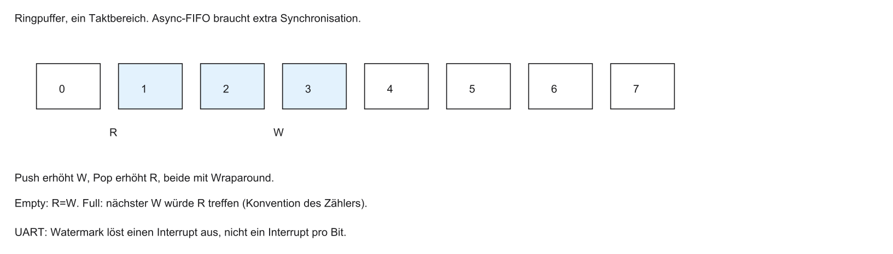
Hardware-FIFOs für I/O
- Übliche UART: ohne FIFO ein Interrupt pro empfangenem Zeichen, nicht pro Bit
- Mit FIFO: die CPU wird erst am Watermark geweckt
- Stehen Sender und Empfänger in verschiedenen Takten, ist die FIFO asynchron und braucht Synchronisationslogik
Brückenschlag zur Software
- CPU sieht keinen Kondensator — nur linearen 32-Bit-Adressraum
- Adress-Decoder lenkt Bereiche an physische Bausteine
- Beispiel: Pointer auf Flash vs. Pointer auf SRAM/DRAM
Memory Map eines Mikrocontrollers
Schematisches Beispiel, keine Plattformadressen aus dem Repo:
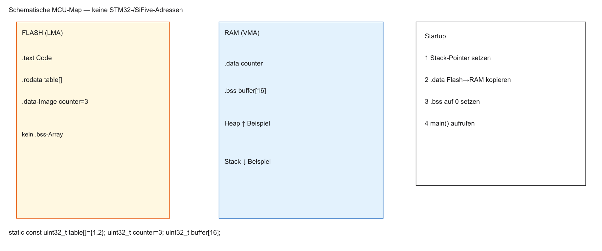
Das Linker-Skript
Ein MEMORY-Block allein legt Sections nicht ab. Typische Toolchain (schematisch, GNU ld: VMA = Laufzeit, LMA = Ladeadresse):
MEMORY {
FLASH (rx) : ORIGIN = 0x00000000, LENGTH = 256K
RAM (rwx) : ORIGIN = 0x10000000, LENGTH = 64K
}
SECTIONS {
.text : { *(.text*) } > FLASH
.rodata : { *(.rodata*) } > FLASH
.data : {
_data_start = .;
*(.data*)
_data_end = .;
} > RAM AT> FLASH
.bss : {
_bss_start = .;
*(.bss*)
_bss_end = .;
} > RAM
}Startup kopiert _data_start aus der LMA im Flash und setzt .bss auf 0. Die Adressen sind Platzhalter, kein STM32- und kein SiFive-Layout.
Ausblick Labor (Renode)
Geplantes Laborziel (Details folgen mit dem Übungsblatt):
- C-Projekt für einen RISC-V-SoC kompilieren
- Linker-Skript und Memory Map untersuchen
- Binary in Renode laden
- Speicherinhalte beobachten
Zusammenfassung Block 1
- Speicherphysik: Kompromisse aus Kosten, Geschwindigkeit, Dichte
- Flash (non-volatil): Firmware; NOR oft mit XIP in MCUs
- SRAM (6T): schnell, teuer — Caches und Register
- DRAM (1T1C): dicht, Refresh — Hauptspeicher
- Linker-Skript verteilt Software auf physische Zonen